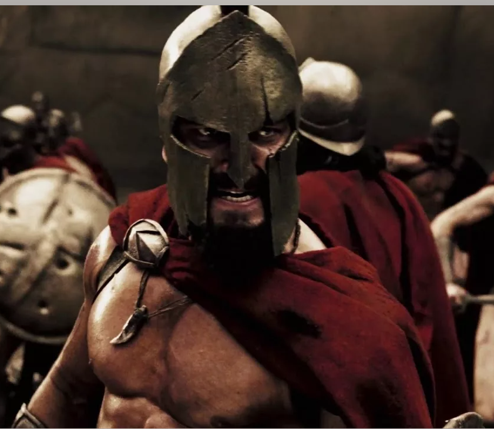
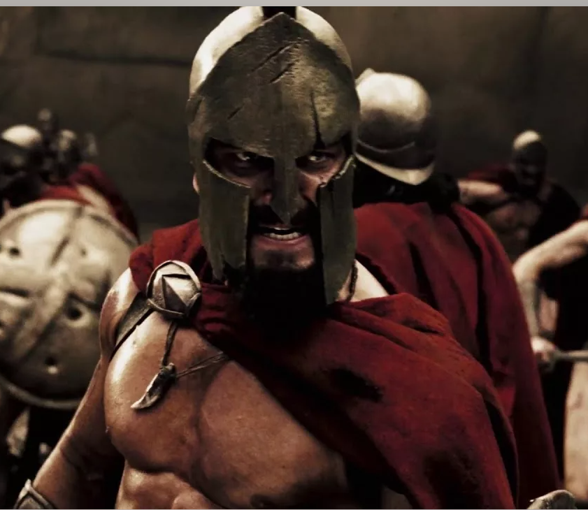

В начале V в. до н.э. Греции стали угрожать персы. Дарий I, захватив в конце VI в. до н.э. греческие города- полисы в Малой Азии, готовился к вторжению в Грецию. Первое сражение состоялось на Марафонской долине в сентябре 490 г. до н.э. в котором победили греки. Один из лучших греческих воинов побежал в Афины, чтобы сообщить о победе над персами. Преодолев 42 километра, он, задыхаясь, крикнул: «Победа!.. Победа!..» – и упал замертво. Впоследствии бег на большие расстояния назвали марафонским. В 480 г. до н.э. войско на Грецию повёл сын Дария I Ксеркс. Единственный путь из Северной Греции в юж- ную шёл через узкое Фермопильское ущелье в горах. Возглавил войско эллинов царь Спарты Леонид. Греки стойко защищали Фермопилы и погибли все до послед- него. Это событие вошло в историю как подвиг трёхсот спартанцев. Решающее морское сражение греков с персами со- стоялось в сентябре 480 г. до н.э. в узком Саламинском проливе. Объединённый флот греческих городов-госу- дарств разбил военный флот персов. После этого пора- жения Ксеркс вынужден был с остатками флота поки- нуть Грецию. В 479 г. до н.э. персы вновь попытались захватить Афины. но были разбиты у города Платеи. Греко-персидские войны закончились мирным догово- ром в 449 г. до н.э.

Города-полисы постоянно воевали друг с другом. Междоусобные войны подорвали хозяйство Греции, разорили её население. А в это время царь Македонии Филипп II готовил войско для завоевания Эллады. Его армия состо- яла из конницы и пехоты. Пехота строилась в фалангу, состоявшую из 16 рядов. Копьё шестого ряда фаланги защищало воина первого ряда. Во время боя вся фаланга была похожа на ощетинившегося железного зверя. Края фаланги охраняла конница. Знаменитый оратор и противник Македонии Демос- фен, объезжая города Эллады, призывал их жителей объединиться и выступить против македонцев. Жители Фивы и некоторых других городов примкнули к союзу Афин против войск Филиппа II.

В 338 г. до н.э. основные силы греков и македонян встретились в Беотии, около города Хе- ронеи. Ожесточённая битва длилась долго. Македоняне победили, применив обманный манёвр, – начав отсту- пление. Греки поверили, что побеждают, и бросились в погоню. Их войско оказалось разделённым на две части. По одной из них сокрушительный удар нанесла конница македонян под командованием сына Филиппа II – Алек- сандра. Другая часть греческого войска стала отступать и была разгромлена. В бою погибла большая часть гре- ков. В результате поражения вся Греция оказалась в за- висимости от Македонии.

После разгрома войска греков население Греции со страхом ожидало своей участи. Однако Филипп II не объявил себя царём греков. Он заключил с ними союз против персов. Себя он провозгласил главнокомандующим объединённого войска. Представители греческих городов-государств, кроме Спарты, собрались в Коринфе и образовали Союз гре- ческих городов под властью Македонии, с целью похо- да против персов. Они договорились, что будут жить в мире, не вести войн между собой. Все разногласия дол- жен был решать Совет греческих городов-государств. Однако осуществить поход против персов царю Фи- липпу II не удалось. Он был предательски убит одним из своих телохранителей, а царём Македонии стал его сын – Александр Македонский.